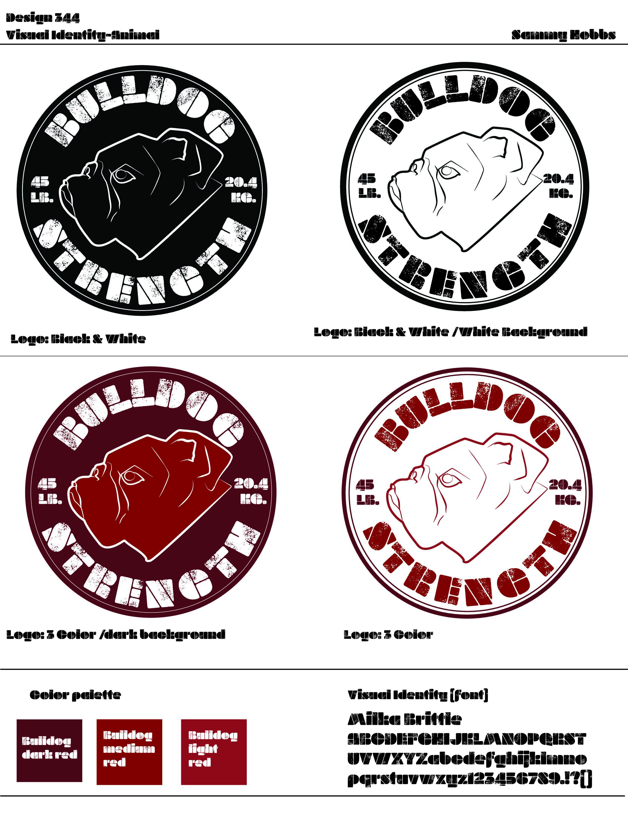
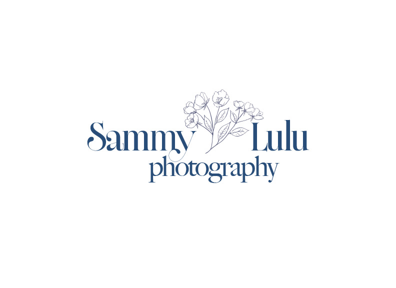
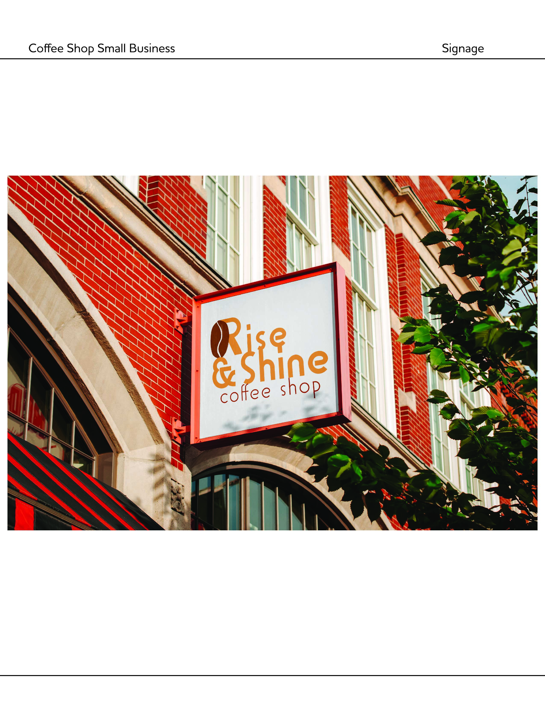

Samantha Hobbs
Graphic & Visual Design Student
Design Focus
Brand Identity
Typography
Graphic & Digital Design
Aesthetic
Clean, modern, & intentional
I’m drawn to strong typography, thoughtful spacing,
and restrained color palettes inspired by modernist
and editorial design.
Selected Works
Each brand was designed with a distinct visual direction, demonstrating my ability to adapt typography, color, and form to different audiences and industries.
Overview
I am a design student focused on branding and visual systems for small businesses. I’m interested in creating logos, typography, and supporting assets that help bring clients’ ideas to life. My work balances structure and clarity with a personal, detail-oriented approach.
Design Statement
I study design because I enjoy helping people
communicate who they are through visual language.
I’m especially drawn to working with small
businesses, where design can play a meaningful role
in shaping identity and building connection.
I’m interested in branding, typography, and graphic
systems that feel cohesive, thoughtful, and adaptable
across different formats.

Fitness Brand:
Bold, energetic identity reflecting strength and movement

Photography:
Minimal, elegant identity emphasizing refinement and detail

Coffee Shop:
Warm, calm branding designed for approachability